KVM Install
 KEY TAKEAWAYS
KEY TAKEAWAYS
- Ubuntu supports KVM virtualization on the desktop and server
- KVM supports NATed and bridged interfaces just like VMware Fusion or workstation.
- You create/manage KVM virtual machines with a GUI (virt-manager) or from the terminal (virsh commands)
- KVM is updated automatically by Ubuntu so there are never package mismatches with the kernel.
Introduction
KVM is the Linux Kernel-mode Virtual Machine tool. It's free and easy to install on Ubuntu. With all the uncertainty around VMware workstation, it's worth knowing how to use KVM! Like everything else when switching to Linux, it will feel quite different than using VMware Workstation at first. But once you spend a couple days KVM and create a few virtual machines I think you will like it.
Plus, VMware is always way behind the Linux kernel so you have to resort to running the updates from vmwware host modules after you update Ubuntu. It's an ugly situation.
By default KVM creates virtual machines on a NATed interface with a dhcp address in the range of 192.168.122.2-.254. The linux package dnsmasq is used to provide the DNS/DHCP services. NAT enables connected guests to use the host physical machine IP address for communication to any external network.
The default network interface is virbr0 and using ip address device show virbr0 looks like this:
ip address show device virbr0
20: virbr0: <NO-CARRIER,BROADCAST,MULTICAST,UP> mtu 1500 qdisc noqueue state DOWN group default qlen 1000
link/ether 52:54:00:b5:48:b1 brd ff:ff:ff:ff:ff:ff
inet 192.168.122.1/24 brd 192.168.122.255 scope global virbr0
valid_lft forever preferred_lft forever
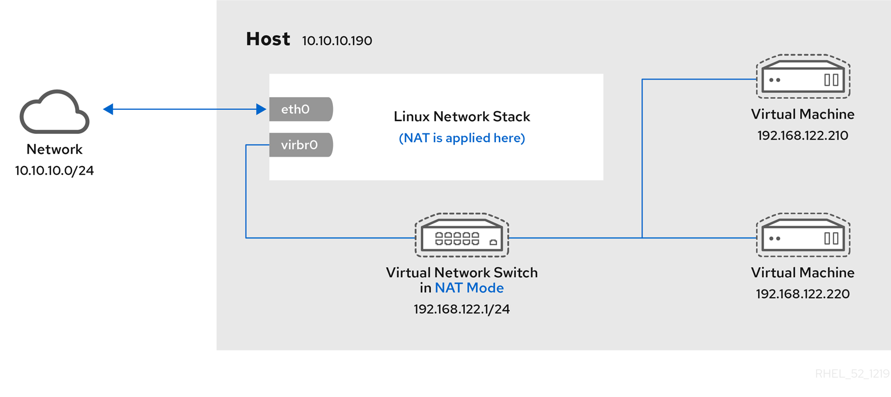
As with VMware, you can create a bridge interface so that the virtual machine has an ip address on the same network as the host. Creating a bridge interface is explained below. A network engineer will probably need a bridge interface.
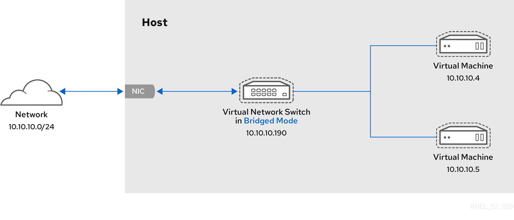
The two Redhat links in the references section have a lot of information on creating interfaces.
Installing KVM
To run KVM, you must have virtualization enabled at the BIOS level. It can be a challenge to find virtualization in the BIOS because different manufacturers call it different things. The easiest way to find out what virtualization is called on your PC is to google your motherboard model.
Verifying virtualization
Once you have enabled virtualization in the BIOS, you should verify that it is seen by the CPU.
Using egrep
To verify that virtualization is enabled in BIOS, run:
48
This greps the /proc/cpuinfo file, vmx is Intel, svm is AMD. You need to see a number in the output. In my case I have a 24 core Xeon processor that provides 48 cores of virtual CPUs.
Install cpu-checker
This is a optional package. From the Debian site: "There are some CPU features that are filtered or disabled by system BIOSes. This set of tools seeks to help identify when certain features are in this state, based on kernel values, CPU flags and other conditions. Supported feature tests are NX/XD and VMX/SVM."
The tools is run using kvm-ok even though it's installed with cpu-checker for some reason. One advantage it has over grepping the /proc/cpuinfo file is that in some failure cases it will provide hints on what to do.
from man kvm-ok page:
DESCRIPTION
kvm-ok is a program that will determine if the system
can host hardware accelerated KVM virtual machines.
The program will first determine if `/proc/cpuinfo`
contains the flags indicating that the CPU has the
Virtualization Technology (VT) capability.
Next, it will check if the /dev/kvm device exists.
If running as root, it will check your CPU's MSRs
to see if VT is disabled in the BIOS.
In some failure cases, kvm-ok provides hints on
how you might go about enabling KVM on a system
where it is arbitrarily disabled.
If KVM can be used, this script will exit 0, otherwise it will exit non-zero.
Use lscpu
lscpu is a built in tool to view cpu information. You can see on line 10 that the virtualization is VT-x:
Installing the packages for KVM
Verify the Ubuntu Version
While not technically necessary, you can verify the version of Ubuntu you have installed with:
Make sure Ubuntu is up to date
Install the packages
or you can use this to install all at once:
I prefer to do one package at time so that I can watch each package but either works. All packages are about 200MB.
Configure the groups
Your user has to be in the following groups
Verify the groups have your user
Enable the virt daemon
If you make changes and need to restart the daemon
Where are the virt files stored
The qemu files are located in /etc/libvirt. You can list the files using:
Back up qemu.conf
If you want to make any changes to the qemu.conf file I recommend making a backup first using:
Run the following to show the backup:
To list the qemu.conf file:
To edit the qemu.conf file:
I didn't need to change the qemu.conf file for anything in this post. It's unlikely that you will need to but I wanted to show how to backup a file in the /etc/ directory.
Creating a KVM Bridge
Why do I need create a bridge?
From the Tecmint link in the reference section below
A typical use case of software network bridging is in a virtualization environment to connect virtual machines (VMs) directly to the host server network. This way, the VMs are deployed on the same subnet as the host and can access services such as DHCP and much more.
See the link Introduction to Linux interfaces for virtual networking for a detailed tutorial on all the virtual interfaces that Linux supports. The list is impressive!
If you just need a virtual machine that is isolated on the host you can use the NAT interface that is built into KVM. Each guest will get an IP address in the range 192.16810.2 - 192.168.10.254.
If you need a static address on the default network see KVM libvirt assign static guest IP addresses using DHCP on the virtual machine
The LAN Information
- LAN Network 192.168.10.0/24
- Ubuntu workstation NIC -
eno1
Install the bridge-utils package
If you installed the bridge-utils package earlier you can skip this step.
sudo apt-get install bridge-utils
If you can't remember just run the command again. APT will tell you that the latest version is installed and exit.
Create the Netplan yaml file
sudo touch etc/netplan/01-netcfg.yamlsudo gnome-text-editor /etc/netplan/01-netcfg.yaml- Paste the following into the yaml file. Change IP addresses and interfaces to match your machine.
Save the file, then change the permissions
sudo chmod 600 etc/netplan/01-netcfg.yaml
Activate the bridge
You can use sudo netplan try to test the changes to 01-netcfg.yaml. If there are no errors just press enter to accept the changes.
Yaml is a pain to work with. You will probably have some errors in the beginning!
If you are sure that the yaml is correct you can use:
sudo netplan apply
to activate the file without testing. I recommend using sudo netplan try all the time.
This creates a bridge named br0 mastered to eno1.
Use ip a to view the interfaces:
eno1: <BROADCAST,MULTICAST,UP,LOWER_UP> mtu 1500 qdisc pfifo_fast master br0 state UP group default qlen 1000
br0: <BROADCAST,MULTICAST,UP,LOWER_UP> mtu 1500 qdisc noqueue state UP group default qlen 1000
link/ether e6:b5:f8:a0:9b:c5 brd ff:ff:ff:ff:ff:ff
inet 192.168.10.250/24 brd 192.168.10.255 scope global noprefixroute br0
valid_lft forever preferred_lft forever
Display the bridge
Display the netplan configuration
The following displays the system wide network configuration
sudo netplan get
Ping the hosts on the bridge
The Window server is at 192.168.10.231 and the Windows 10 guest is at 192.168.10.232
list out the xml config files
l -la /etc/libvirt/qemu/networks
Verify the physical network switchport settings
Make sure that the switchport of the physical network switch doesn't have bpdu-guard enabled! Once the bridge comes up it sends bpdu frames.
I was connected to a Cisco 3850 on an access port. The switch had spanning-tree portfast bpduguard default in global configuration. The port went into err-disabled when the bridge came up. It took me a while to figure out why the bridge wasn't working!
I changed the port to a trunk with native vlan 10 to match the configuration that had been on the access port.
Virsh Commands
View saved configuration
sudo virsh dumpxml win2k16 | grep -i 'bridge'show bridge config for a host named win2k16sudo virsh dumpxml win2k16 > ~/win2k16.xmlSave the configuration for a host named win2k16
Start/stop a virtual machine
sudo virsh win2k16 startStart a virtual machine named win2k16sudo virsh shutdown win2k16Send an ACPI shutdown signal to the virtual machinesudo virsh destroy win2k16Power off the VM without signalling it. Data loss can occursudo virsh rebootwin2k16 Does not signal the VM. Data loss can occur
View VM Details
sudo virsh dominfo win2k16Show detailed information
Check Virtual Machine status
sudo virsh domstate win2k16
List virtual machines
sudo virsh list --allList all vms including those not runningsudo virsh listList all running vms
Connect to VM Console
sudo virsh console win2k16See How to enable KVM virsh console access for a detailed article on how to setup console access
View DHCP leases
sudo virsh net-dhcp-leases defaultshow dhcp leases on network default.sudo virsh net-dhcp-leases host-bridgeshow dhcp leases on network host-bridge.
In the yaml file we disabled dhcp with dhcp4: false so there are no leases.
View the network yaml files
- sudo virsh netdumpxml default Show the configuration of the network named default
- sudo virsh netdumpxml host-bridge Show the configuration of the network named host-bridge
Edit the network yaml files
- virsh net-edit default - Open the yaml configuration file of the network
defaultin the system editor - sudo virsh net-edit host-bridge - Open the yaml configuration file of the network
host-bridgein the system editor
Start/Stop networks
- sudo virsh net-destroy default - Stop the network
default - sudo virsh net-start default Start the network
default
Manually create the bridge configuration
You can manually create the bridge and link it to eno1 from the terminal
This method will not survive a reboot but it's quick for testing.
Create a Windows 10 virtual machine
Linux can't ship Windows drivers so you have to download the virtio package first. The Fedora People host the ISO here. Save it to your Downloads directory.
You do not need the virtio ISO if you are creating a Linux virtual machine.
You will need the Windows ISO also. You can download it using this link - Windows 10 2023 Update | Version 22H2
Open the terminal and enter:
Or hit the super key and type virt to bring up the virtual machine icon.
This will open the virt-manager GUI.
Click on the "New Virtual Machine" Icon.
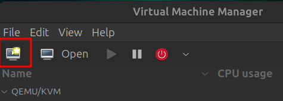
Select "local install media (ISO image or CD-ROM)" and click forward.
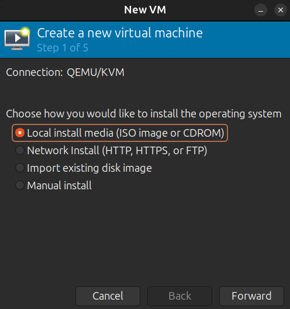
On this screen click "Browse" and select the Windows ISO and click "Forward". Notice that KVM identifies the ISO as Windows 11.
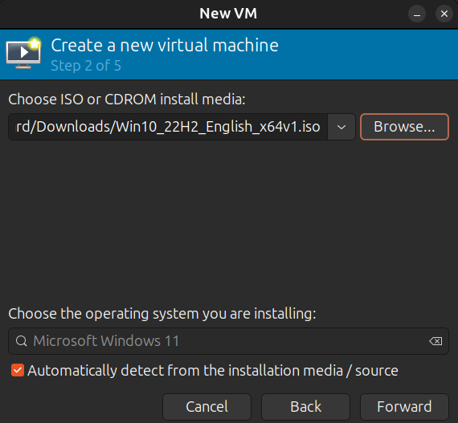
Set the Memory and CPU sizes, click forward
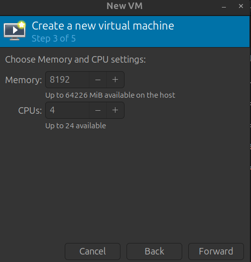
Set the disk size. Since this is a throw away virtual machine I set it to 20GB.
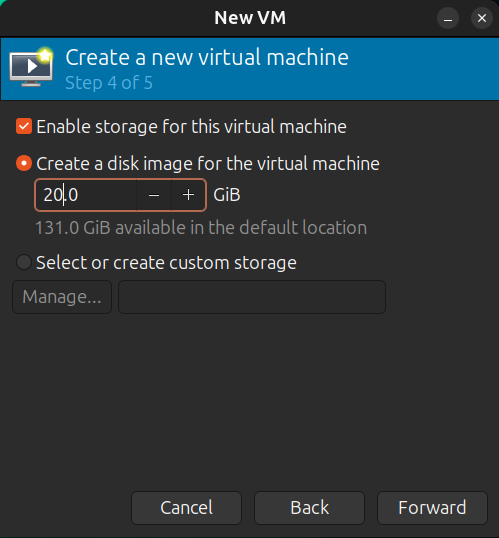
Click on "Select or create custom storage". Click "Manage..." and select the virtio ISO that you downloaded earlier.
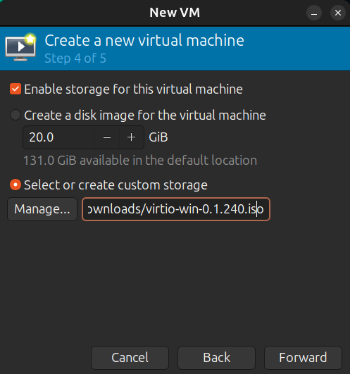
Click Forward, this is the "ready to begin installation" dialog. Click "Customize before install".
Click forward and select the NIC
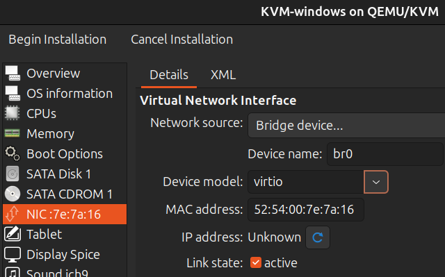
Note
You must follow the Creating a KVM Bridge section first. If you just need a NAT virtual machine, you don't need to create a bridge. But you won't be able to remote desktop into the Windows virtual machine.
If you need a bridge, leave the NIC at NAT, finish creating the virtual machine, follow the instructions for creating a bridge, then go back and change the NIC to Bridge/Br0 using the Edit, Virtual Machine Details menu.
Click finish and the GUI based installation of Windows will begin. It's different than a Windows install on bare metal and you will see an image of the virtio drivers installing before the windows installation starts.
Start the virtual machine
From the terminal you can open the Virtual Machine's GUI console using
virt-viewer
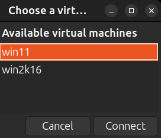
Select the Win11 virtual machine anc click connect.
The GUI console will open:
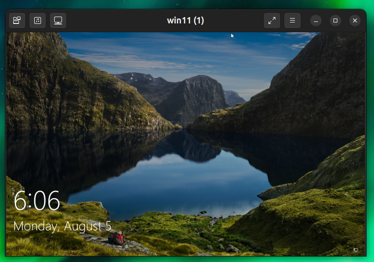
Click the icon on the top left and select Ctrl+Alt+Delete.

 The VM says it's Windows 11 but it is actually Windows 10!
The VM says it's Windows 11 but it is actually Windows 10!
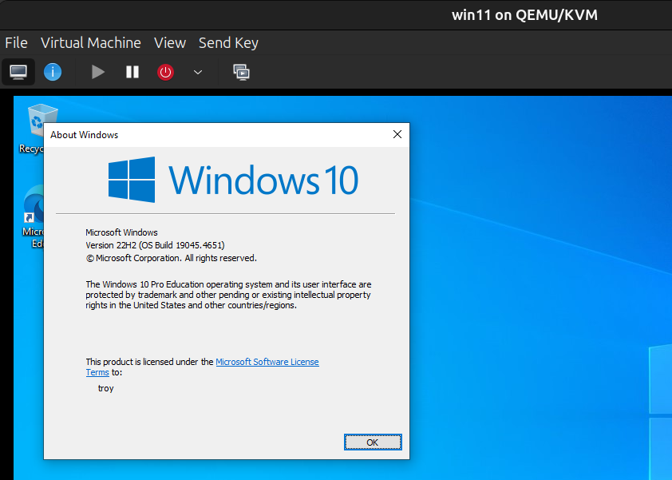
Congratulations, you now have a bridged Windows virtual machine up and running on Linux with KVM!
Install the qemu guest-agent
The qemu-guest-agent is a helper daemon installed in a virtual machine (guest) when using QEMU. It is used to exchange information between the host and guest, and can be used to properly shut down the guest. The agent passes network information, including IP addresses, from the virtual machine to the host.
Mount the ISO image
We need to mount the virtio-win-
On the Linux host
Open a terminal and run these commands:
Now the iso is mounted at /media/iso. It's read only but that's fine. We are not going to change anything.
Now change to the iso directory and list the files:
The file that we will be installing is in the guest-agent folder, qemu-ga-x86_64.msi.
Mount the iso on the Windows guest
Switch to virt-manager and open a console to the Windows host. Above the console, click the Virtual Machine menu and select Redirect USB device:
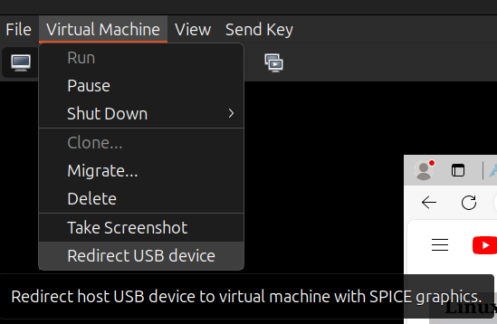
A dialog will open, select the Generic Mass Storage device.
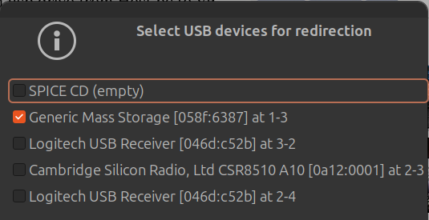
Install the Guest Agent
In the guest, open file Explorer and select the iso.
Double click on the guest-agent directory, then double click on qemu-ga-x86_64.msi. This is a standard Windows MSI installer, follow the directions and finish the install.
Verify that the guest agent is running on Windows
Open a PowerShell console
You will now be able to copy/paste between the guest/host and host/guest.
Clean up
Now that the agent is installed, we need to eject the ISO from the guest and unmount the ISO from the host. In Files Explorer, right click over the DVD Drive: virtio-win-0.1.240 and select the eject option.
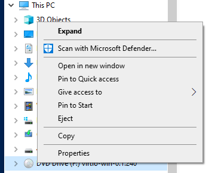
On the host, open a terminal (you can't be in the /media/iso directory or the unmount will fail):
QEMU References
- Issue with copy/paste in QEMU Windows guest
- Qemu-guest-agent - A ProxMox tutorial on the Guest Agent
- How to Mount ISO Files on Linux
Bridged interface with vlans
KEY TAKEAWAYS
- Ubuntu supports vlans by default on the desktop and server
- KVM supports bridge interfaces with vlan tagging
- The bridge interface uses STP by default
- brctl has a rich set of tools for working with bridge interfaces
- KVM supports Open vSwitch
Why would you want to create a bridge interface with vlans? On the laptop that you carry around you probably wouldn't have a need to. But if you have an Ubuntu server setup in your lab you almost certainly will want to be able to segment your services.
This tutorial is based of of the official Ubuntu documentation for netplan. I modified the tutorial to fit my lab server.
The VLAN Information
- LAN (untagged) Network 192.168.10.0/24
- vlan 40 Surveillance 192.168.40.0/24
- vlan 41 IoT 192.168.41.0/24
- Ubuntu workstation NIC -
eno1
Interface eno1 is connected to a Cisco switch on port Gi1/0/6. The port has the following configuration:
Inter vlan routing is enabled and L3 interfaces are configured:
- vlan 40 - 192.168.10.235
- vlan 41 - 192.168.41.235
Disable netfilter for bridged interfaces
To allow communication between the host server, its virtual machines, and the devices in the local VLANs, disable netfilter for bridged interfaces:
| /etc/systemctl.conf | |
|---|---|
Apply the changes immediately, without rebooting the host.
Netplan configuration
- Disable dhcp on the NIC
- Create vlans 40, 41
- Create three bridge interfaces, and assign IPv4 addresses to them:
- br0: bridge on the untagged VLAN1 and the management interface of the server
- br40: bridge on vlan40
- br41: bridge on vlan41
Create the yaml file
It's very easy to make mistakes when creating a Yaml file. You can use the site YAML Validator to validate your yaml file.
Test the new network settings
If no errors occur, press enter to accept the network settings.
Apply the configuration
Verify an yaml file before modifying production
The yaml files that Netplan executes can be in these directories:
Netplan searches directories in that order. You can have as many yaml files as needed. They are processed numerically so a file that starts with 00 will be processed first.
You can use the following command to test a yaml file that isn't in one of these locations.
Once you are happy with the configuration, copy the configuration file to /etc/netplan/ and run sudo netplan apply.
Configure virtual networks using virsh
The next step is to configure virtual networks defined for virsh domains. This is not necessary, but it makes VM deployment and management easier.
Check networking and delete the default network
Check existing virtual networks:
There should be one default network as in this example:
If needed, use the net-info command to gather more details about the default network:
Remove the default network:
Check network list to confirm the changes have been applied. There should no networks defined now:
Create the networks
Create a directory for VM data. For example:
Define the bridge interface, br0, for VLAN1 by creating the /mnt/vmstore/net-br0.xml file with the following contents:
| /mnt/vmstore/net-br0.xml | |
|---|---|
Define the bridge interface, br0-vlan40, for VLAN40 by creating the /mnt/vmstore/net-br0-vlan40.xml file with the following contents:
| /mnt/vmstore/net-br0-vlan40.xml | |
|---|---|
Define the bridge interface, br0-vlan41, for VLAN41 by creating the /mnt/vmstore/net-br0-vlan41.xml file with the following contents:
| /mnt/vmstore/net-br0-vlan41.xml | |
|---|---|
Enable the networks
This consists of three steps (performed for each of the networks):
- Define the network
- Start the network.
- Set the network to autostart.
At this point you should have a bridge interface configured with the vlans 40, 41 up and running.
Verify the networks
KVM/Virsh provides a rich set of terminal commands for verifying the network and viewing vlans, MAC addresses and ohter network information.
Use net-list
Viewing the links
You can use the following command to view the links. I have piped the output to grep and used the or operator \| to filter on master and vlan protocol.
Untagged br0
Tagged vlan 40
See what bridge the vlan interface is connected to
The master br40 in line 2 tells you that this interface is mastered to bridge br40. Line 3 shows the vlan tagging is id 40 or vlan 40.
Tagged vlan 41
See what bridge the vlan interface is connected to
The master br41 in line 2 tells you that this interface is mastered to bridge br41. Line 3 shows the vlan tagging is id 41 or vlan 41.
Display the bridge interfaces
This output is after I connected the Ubuntu VM to br0-vlan40. That is why there is the vnet18entry. The vnet is the virtual interface in the VM.
You can add at -d flag for more details:
Display the ipv6 multicast groups
I have ipv6 running on br0. To view the ipv6 multicast groups that it has joined:
Monitor devices
From the man bridge page
The bridge utility can monitor the state of devices and addresses continuously This option has a slightly different format. Namely, the monitor command is the first in the command line and then the object list follows:
bridge monitor [ all | OBJECT-LIST ]
OBJECT-LIST is the list of object types that we want to monitor.
It may contain link, fdb, vlan and mdb. If no file argument is
given, bridge opens RTNETLINK, listens on it and dumps state
changes in the format described in previous sections.
If a file name is given, it does not listen on RTNETLINK, but
opens the file containing RTNETLINK messages saved in binary
format and dumps them.
With no object given:
Attach a VM to vlan 40
In virt-manager, double click on a VM, select View, Details. Click on NIC on the left and then select `Virtual network 'br0-vlan40' from the dropdown list. Click apply to save the configuration.
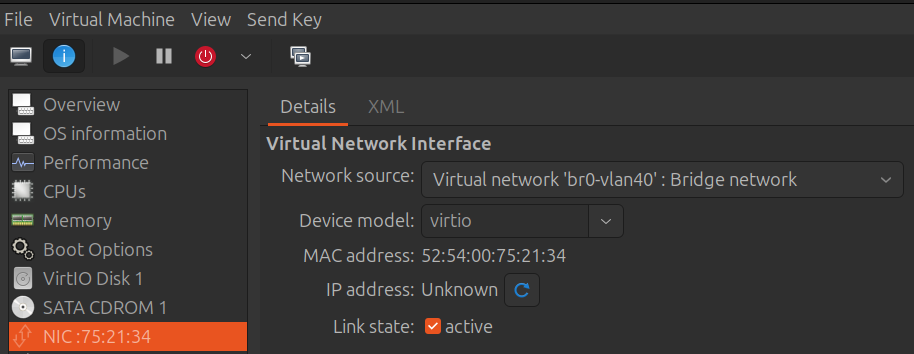
Click view, console to open the Ubuntu VM. I don't have a DHCP server on vlan 40 so I manually set 192.168.40.200 as the address.
From the terminal on the VM run ip address to find the MAC address.
Now back on the host run
The vlan 40 interface has a MAC address of c4:34:6b:65:b6:d0
The Ubuntu VM's MAC and the vlan 40 mac are on the bridge br40!
On the Cisco switch:
You can see the br40 MAC address on line 9 and the VM's MAC address on line 11. So we have verified that the bridge works and the vlan tagging works!
traceroute to vlan 10
The route hit interface vlan 40 on the switch and then the inter vlan routing sent it to the device at 192.168.10.222.
It looks like we have successfully created a bridged interface with 3 vlans.
brctl options
NetworkManager debug logs
By default, the NetworkManager log level is set to info. You can use nmcli to modify the logging level:
You do not need to restart NetworkManager to begin seeing debug messages logged to journalctl. You can watch the NetworkManager logs:
Set logging back to info
Reference Links
- Netplan documentation - Offical documentation for Netplan. Tutorials, How to Guides, References
- VM Networking Libvirt / Bridge - A youtube video
- How to add a static IP in Ubuntu 22.04 Server - A simple example of a Netplan file for a static address
- Error in network definition: bond0: interface not defined - An example of creating a bond in Netplan.
- use the stable VirtIO ISO, download it from here - Download the Virtio drivers for Windows guests here
- The Essential KVM Cheat Sheet for System Administrators
- How to enable KVM virsh console access - Create a serial interface on a Linux VM
- Windows 10 guest best practices - This video is for ProxMox but the section on installing the virtio drives for the Windows NIC works on KVM with virt manager.
- Redhat Introduction to Linux interfaces for virtual networking - A great article by Redhat. It discusses every type of Linux interface that you can create.
- Redhat Virtualization Deployment Guide - A great article by Redhat on deploying KVM.
- How to Install KVM on Ubuntu 24.04 Step-by-Step - A 25 minute youtube video on installing KVM on Ubuntu.